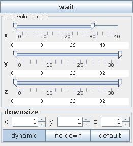

CROP/DOWNSIZE
The crop/downsize/clamp module reduces the size of a structured field by extracting the data within a specified range of its dimensions, resamples a field using a scaling factor or clamps minimum and maximum values of data values.
Input data
The input field is regular.
Output data
The output field is regular.
Computation parameters

If wait button is pressed processing is stopped. By default the button is not pressed and changes of parameters are processed immediately.
The data volume crop sliders select the geometric extents of the regular field, i.e. lower and upper bound array indices in their respective dimensions.
The user can adjust the downsize factors using the downsize input text fields. When the factor is greater than 1, downsize reduces the size of the field, saving processing time and memory by "thinning out" the data. Default downsize values depend on the dimensions of the input field and are chosen automatically.
If dynamic button is pressed output is generated every time the downsize parameter changes. No down button cancels downsize.
Default button adjusts the default values for downsize.